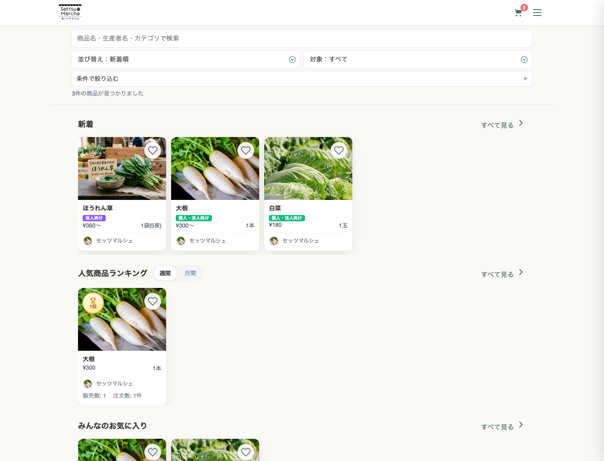
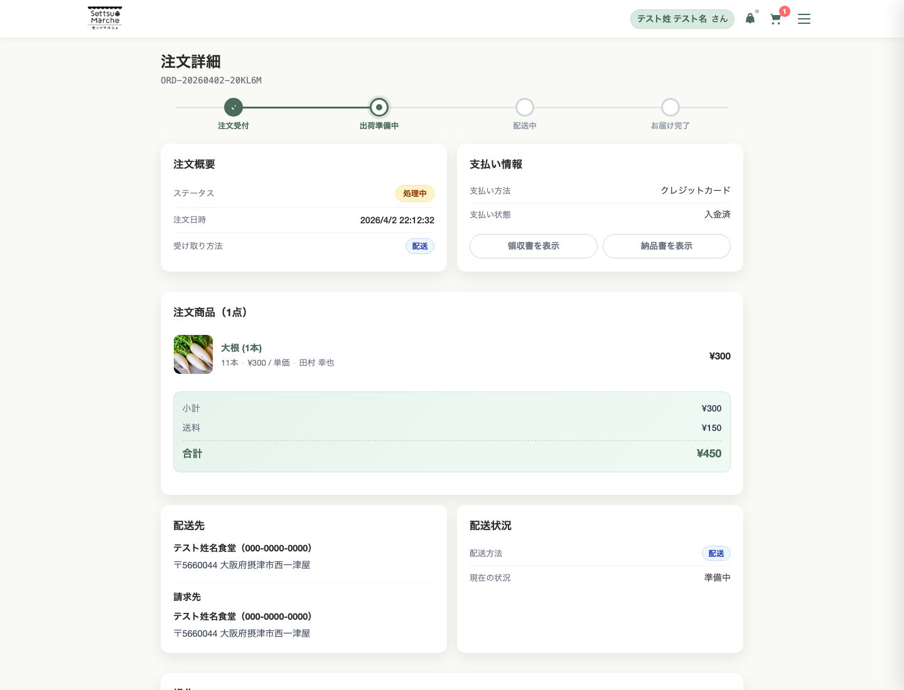

ECサイトの案件に見えて、実際にはもっと広い範囲を扱っていました。 誰が何を見て、どこで承認し、どの単位で請求し、公開画面と業務画面をどう切り分けるか。 この案件で大事だったのは、機能を足していくことよりも、商流と運用を整理して一つの構造にまとめることでした。
扱ったのは、販売画面ではなく運用の全体像でした。
消費者向けの購入導線だけなら、一般的なECとして整理できます。ただセッツマルシェでは、 生産者、買い手、管理者それぞれの責務が異なり、B2Bの承認や顧客別価格、請求書発行など、 売る前後の業務が大きな比重を占めていました。
そのため、公開ページと業務管理の境目を曖昧にせず、画面ごとに目的を分けながらも、 一つの流れとして矛盾しない構成に整えることを優先しました。
- buyer / seller / admin のロールごとに責務を明確化
- 発注承認や顧客別価格など、法人取引特有の要件に対応
- 決済、帳票、配送情報まで含めて一つの運用導線として整理

実装の中心にあったのは、事故が起きやすい領域です。
運用前提のサービスでは、認証、権限、決済、帳票といった領域がそのまま信頼性に直結します。 この案件でも、メール認証や2段階認証、WebAuthn / パスキー、Stripe を使った購入導線、 注文詳細と帳票出力など、あとから継ぎ足すと崩れやすい部分を最初からまとめて扱いました。
認証と権限
メール認証、2段階認証、WebAuthn / パスキー、信頼済みデバイス管理まで含めて整理しました。
購入体験
商品一覧、商品詳細、カート、チェックアウト、再注文まで、一連の流れを切れ目なく設計しました。
B2B運用
発注承認フロー、組織管理、顧客別価格、月次請求といった法人取引の実務にも対応しました。

この実績で伝えたいのは、複雑さを整理して進められることです。
セッツマルシェは、単純に「ECサイトを作った」では収まらない実績です。 画面数が多いことよりも、複数の立場とルールが混ざる案件を、運用可能な構造に整えながら前へ進められること。 そこにこの案件の価値があります。
公開サイトの見え方と、日々の業務運用は切り離せません。
その両方を一つのシステムとして扱えるかどうかが、この案件の本質でした。
Node.js 20 / Express 5 / EJS / PostgreSQL / Redis / Stripe / Cloudflare R2 / Jest
複数ロール設計 / B2B取引 / 決済 / 認証 / 業務システム化